Lab1-Web Report¶
Task 1:DNS¶
查询权威域名服务器¶
要想使用 nslookup 这一命令来查询 cubicy.icu 的权威域名服务器（Name Server），需要使用命令 nslookup -type=NS cubicy.icu。如下图，在Authoritative answers 中，可以得到对应的六个 IP 地址。
查找 IP 地址¶
查找 cubicy.icu 的 IP 地址，直接使用命令 nslookup cubicy.icu 即可。如下图，可以看到其有两个 IP 地址。
DNS A 查询探究¶
多次查询 DNS A 记录，每次的响应不一样，如下图，出现了两种答案，但是总共两个不同的地址（正是上面查询出的两个 IP 地址），只是顺序不同，应该是响应的服务器有主次之分（？）。这样返回不同的 IP 地址，两个地址概率均等可以实现网络负载均衡，不会因为其中一个处理请求过多而崩溃。
寻找文本¶
执行命令 nslookup -type=TXT cubicy.icu，可以看到其中隐藏的 Base64 编码的文本，如下图：
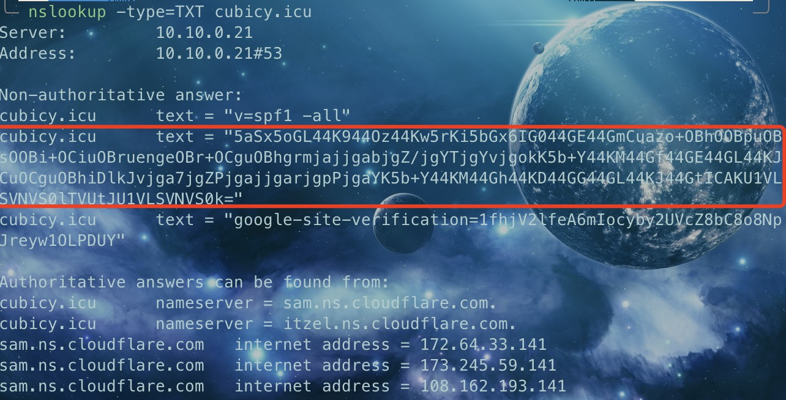
复制其到 CyberChef 中可以得到：
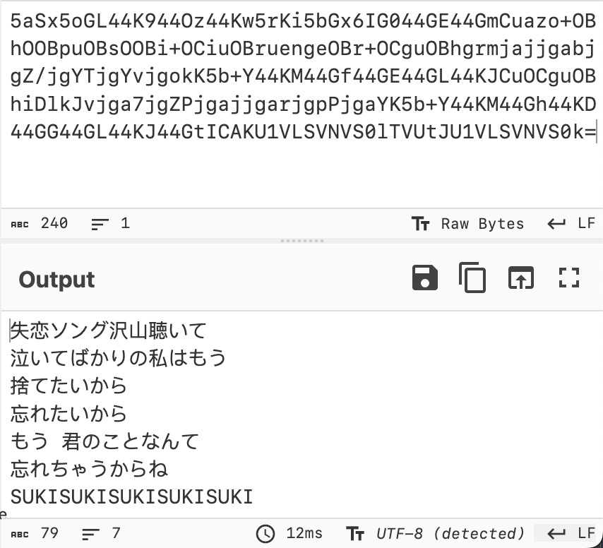
DNS 查询 IP¶
分别使用命令 host cubicy.icu 173.245.59.141 host www.cubicy.icu 108.162.93.141 host blog.cubicy.icu 172.64.34.42 命令，从 DNS 服务器查找到它们的 IPv4 地址如下：
直接访问这些 IP 地址，不能访问成功，这些地址不是服务器的真实地址。
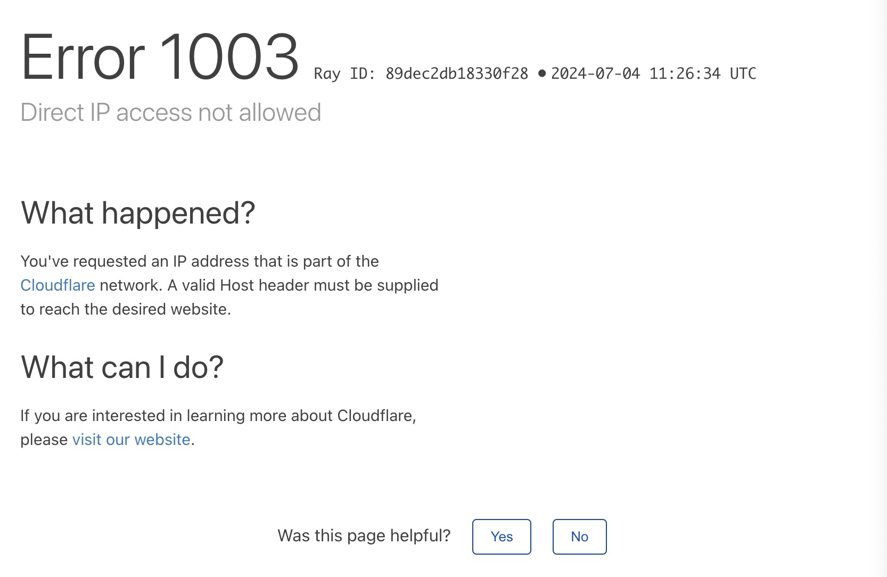
通过查询相关资料，结合提示，可以猜测 YYY 借助代理 IP 服务/技术，来隐藏本地的真实 IP。
Task 2:HTTP¶
抓包学在浙大¶
使用 BurpSuite 对从输入网页连接，到统一身份验证页面完整呈现，再到输入用户名密码后，最后直到登录成功呈现学在浙大页面，一共拦截了 313 份 HTTP 报文，如下图：
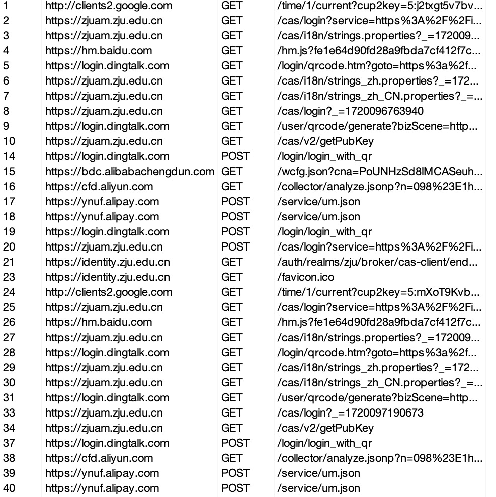
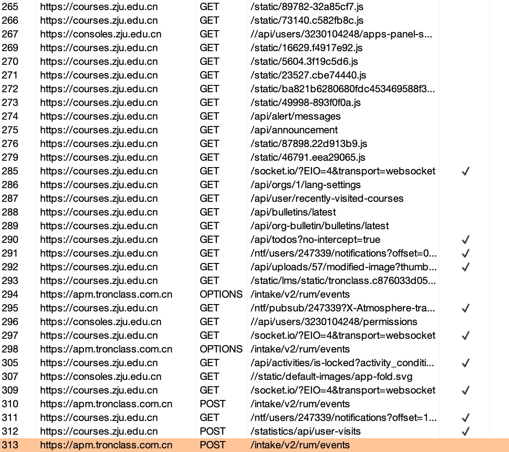
HTTP 报文组成部分¶
我们挑选其中一个报文来看：
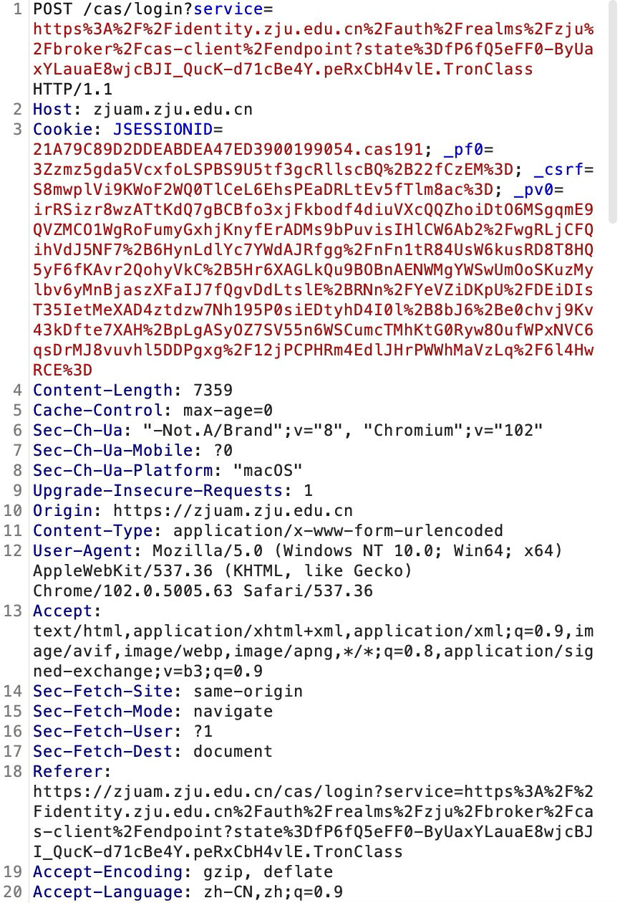
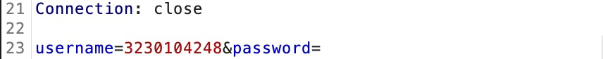
-
请求行：即为第一行，包含 HTTP 方法（GET/POST）、请求目标 URL 和 HTTP 协议版本。
-
请求头：第 2 行至第 21 行，包含目标服务器的主机、Cookie 信息、浏览器和版本信息、客户端平台信息、客户端用户代理信息、客户端支持内容编码、客户端接受语言等
- 请求主体：这里附带了必要的信息，在登录统一身份认证时即为用户名和已加密的密码。
保存用户登录状态¶
网站是通过 Cookie 中的 Session-id 来保存用户的登录状态的。
HTTP 区分不同的包¶
TCP 只是传输一个连续的字节流，没有内在的边界或分隔，但是对于 HTTP 协议来说：
- 明确以请求/响应行开始，标识HTTP 方法（GET/POST）、请求目标 URL 和 HTTP 协议版本
- HTTP 请求和响应头部中的
Content-Length字段明确指出了请求体或响应体的字节长度
这些都能让 HTTP 实现良好的识别与拆包。
回到 cubicy.icu¶
直接访问源服务器地址 101.132.222.48 ，不成功：
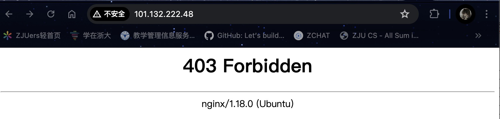
主机区分访问方式¶
对访问 IP 地址和访问域名进行抓包，分析其报文就会发现，两者仅仅只是在 Host 上面有不同：
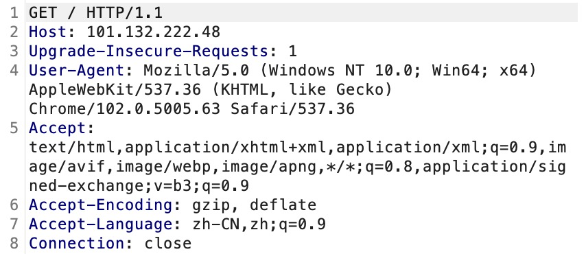
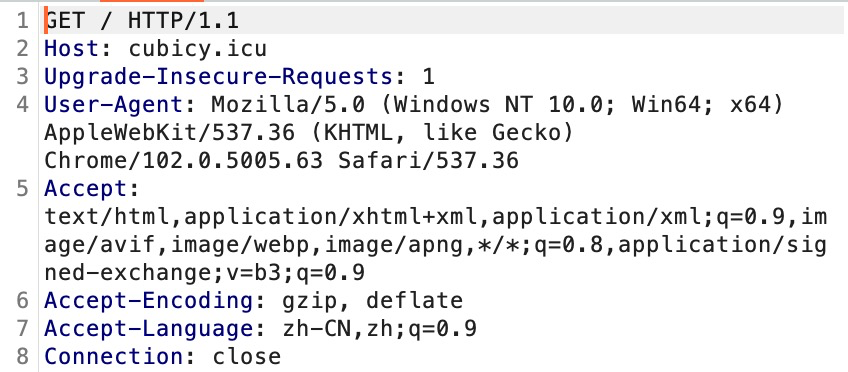
所以我们可以猜测，对于主机来说，它通过 HTTP 报文中的 Host 字段判断是 IP 访问还是域名访问。
修改报文打开主页¶
直接修改报文中的 Host，最后得到未备案（？！）
这点不知道为什么，是因为做了反向代理嘛（？），还请指点一二。。。
Task 3:预习¶
使用 BurpSuite 工具，从登录 zdbk 网站出发直到显示最后成绩一直抓包，得到 cookie 信息以及请求主体部分：
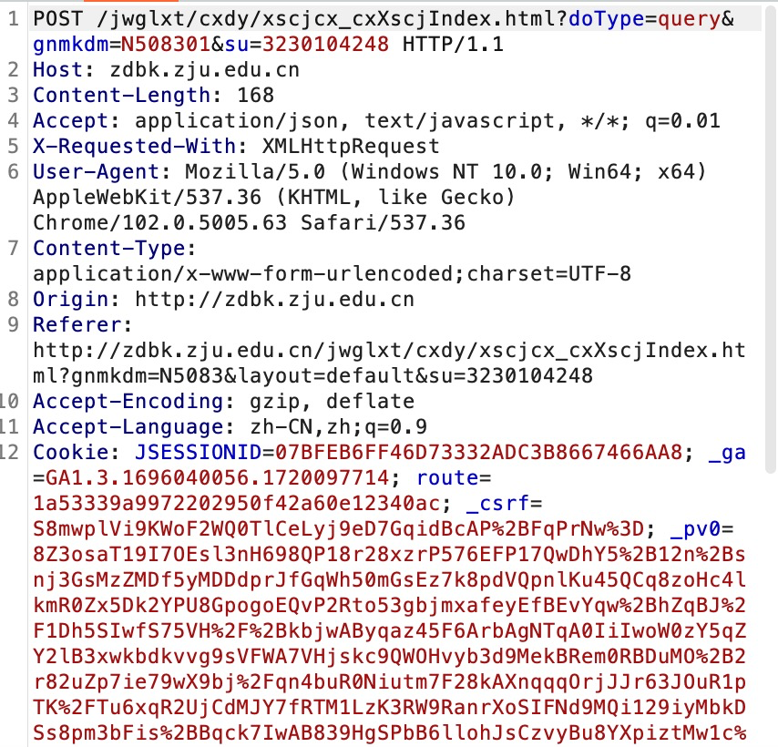
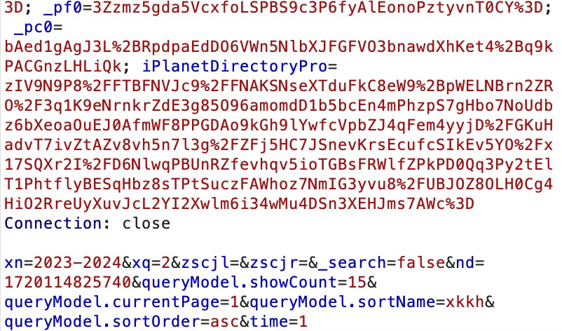
因此编写 Python 代码如下：
最后可以得到结果：
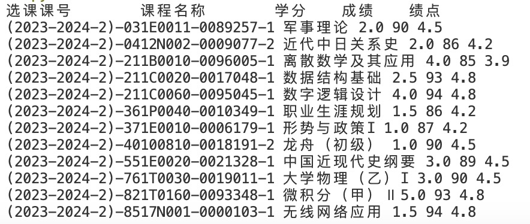
Bonus¶
HTTP/3¶
通过查询相关资料，原来的 HTTP/2 协议虽然大幅提升了 HTTP/1.1 的性能，但它还是基于 TCP 实现的，依旧有 TCP 具有的问题：
- TCP 不是按最高效率设计的，比如在传输数据前要先握手，握手要先来一个 RTT，如果两端地理位置比较远，这可能要超过 100ms。更何况整个 HTTP/2 的连接建立需要 3 RTT，而 HTTP/3 仅仅需要 1 RTT。
- 队头阻塞，即当 TCP 传输数据时，把数据当成一个文件或者一个字节流，这意味着如果中间有数据丢失，那后面的数据也会堵住，HTTP/2 在应用层中解决了这个问题，但是在传输层还是有这个问题。HTTP/3 使用 QUIC，基于 UDP，UDP的数据包在接收端没有处理顺序, 即使中间丢失一个包, 也不会阻塞整条连接. 其他的资源会被正常处理。
- 连接迁移，TCP 连接基于四元组（源 IP, 源端口, 目的 IP, 目的端口）, 切换网络时至少会有一个因素发生变化, 导致连接发送变化。当连接发送变化时, 如果还是用原来的TCP 连接, 则会导致连接失败, 就得等到原来的连接超时后重新建立连接，这样也需要几百毫秒时间。QUIC 不以四元素作为表示, 而是使用一个 64 位的随机数, 这个随机数被称为 Connection ID, 即使 IP 或者端口发生变化, 只要 Connection ID 没有变化, 那么连接依然可以维持。